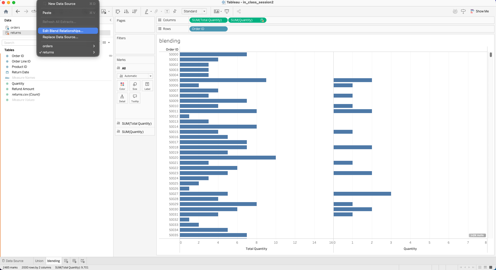

flowchart LR A[Raw Tables] --> B[Data Connection] B --> C[Data Modeling] C --> D[Calculations] D --> E[Filters and Parameters] E --> F[Visual Analysis] F --> G[Interactive Dashboard]
Session 02: Intermediate Visual Analytics
DATA MODELING
ADVANCED CHARTS
CALCULATIONS
PARAMETERS
FILTERING
Learning Goals
By the end of this session, you should be able to:
- Combine data using relationships, joins, unions, and blending
- Understand Tableau’s logical and physical data model
- Create calculated fields at different levels of evaluation
- Use basic Tableau functions in analytical calculations
- Apply Level of Detail (
LOD) expressions correctly - Use parameters for interactive analysis
- Understand Tableau’s filter order of operations
- Build advanced analytical charts such as area charts, bullet charts, and box plots
- Design interactive dashboards with actions, filters, and tooltips
Overview
This session moves from basic chart building to analytical modeling and interactive dashboard design.
You will learn how Tableau:
- Combines data from multiple tables and sources
- Evaluates calculations at different levels of detail
- Uses filters and parameters to control analytical logic
- Supports advanced chart types for deeper insight
- Enables interactive dashboards for exploratory analysis
From Flat Tables to Analytical Models
In real-world analytics, data rarely exists in a single flat file.
Business questions usually span multiple entities such as:
- Customers
- Orders
- Products
- Locations
- Time
Poor data modeling can lead to:
- Incorrect aggregations
- Duplicated values
- Slow dashboards
- Misleading conclusions
Tableau provides several ways to combine and evaluate data. Choosing the correct method is essential for both accuracy and performance.
Datasets Used in This Session
For this session, we use a multi-table retail dataset consisting of:
customers.csvcustomer_addresses.csvorders.csvand quarterly order filesorder_details.csvproducts.csvreturns.csvsalespeople.csv
This dataset represents a real-world analytical scenario where multiple tables must be combined to answer business questions.
Dowloading the Datasets Part 1
TipDowloading with Pytho
You can download the dataset using Python with the following code:
URL = "https://raw.githubusercontent.com/hovhannisyan91/tableau-analytics-portfolio/refs/heads/main/session2/data"
import pandas as pd
tables = [
"customers.csv",
"customer_addresses.csv",
"orders.csv",
"order_details.csv",
"products.csv",
"returns.csv",
"salespeople.csv"
]
for table in tables:
url = f"{URL}/{table}"
df = pd.read_csv(url)
df.to_csv(f"./data/{table}", index=False)Dowloading the Datasets Part 2
Now, we will download the quarterly order files using Python. We have 2023_Q1 - 2023_Q5 order files.
URL = "https://raw.githubusercontent.com/hovhannisyan91/tableau-analytics-portfolio/refs/heads/main/session2/data/quarters"
import pandas as pd
tables = [
"orders_2023_Q1.csv",
"orders_2023_Q2.csv",
"orders_2023_Q3.csv",
"orders_2023_Q4.csv",
"orders_2024_Q1.csv",
"orders_2024_Q2.csv",
"orders_2024_Q3.csv",
"orders_2024_Q4.csv",
"orders_2025_Q1.csv",
"orders_2025_Q2.csv"
]
for table in tables:
url = f"{URL}/{table}"
df = pd.read_csv(url)
df.to_csv(f"./data/{table}", index=False)Connection Types
Tableau supports two main connection modes:
- Live connection
- Extract connection
Both options have pros an cons, meaning that we should find the trade-offs. The best choice depends on the specific use case, data characteristics, and performance requirements.
Live Connection
A live connection queries the underlying database every time the user interacts with the dashboard.
Use it when:
- Data must be up-to-date
- The database is well optimized
- Dashboard queries are not excessively heavy
- Freshness is more important than speed
Considerations:
- Performance depends on database speed, network, and query complexity
- Complex dashboards may become slow
- Inefficient data models can create long load times

Extract Connection
An extract copies data into Tableau’s .hyper format.
Use it when:
- Dashboard performance is critical
- Data does not need real-time updates
- Dashboards contain complex calculations
- Many users will access the dashboard
Considerations:
- Data can become outdated between refreshes
- Refresh schedules must be managed
- Extract design should align with upstream refresh timing

Tip
For exploratory work and many production dashboards, extracts are often the best choice because they improve speed and reduce pressure on the source database.
Creating Extracts
Extracts can be created in Tableau Desktopor on the web. Tableau copies data from the remote source into an optimized local structure (.hyper file), which is stored on disk either locally or on Tableau Server or Tableau Cloud.


When creating an extract, Tableau allows you to control:
- Storage structure
- Filters
- Aggregation
- Sampling
- Incremental refresh settings
Tip
It is better to finalize the data model before creating an extract. Structural changes later may invalidate the extract and require rebuilding it.
Extract Properties
When creating an extract, you can configure:
- How the extract stores data
- Which rows are included
- Whether data is aggregated
- Whether incremental refresh is used

Importanthow to store
To decide how the extract data should be stored
You can choose between:
- Logical Tables (denormalized schema)
- Physical Tables (normalized schema)
Logical Tables
Logical tables store one extract table per logical table in the data model.
This works well when:
- Relationships are used
- Tables should remain conceptually separate
- Tableau should resolve combinations dynamically
Physical Tables
Physical tables store one extract table per physical table.
This can be useful when:
- Equality joins are used
- You want tighter control over storage
- You want to reduce extract size in some scenarios
Extract Filters
Extract filters limit the data before it is stored in the extract.
Use them to:
- Reduce file size
- Improve performance
- Limit historical range
Aggregate Data for Visible Dimensions
This option aggregates measures at the visible dimension level.
Benefits:
- Fewer rows
- Smaller extract size
- Better performance
Choose the Rows to Extract
You can select:
- All rows
- Top
Nrows where supported
Tableau applies filters and aggregation before sampling.
Incremental Refresh
Incremental refresh adds only new rows since the previous refresh.
Benefits:
- Faster refreshes
- Less load on source systems
Risk:
- Schema changes usually require a full refresh
Note
If the structure of the source data changes (e.g., a new column is added), you must do a full refresh before incremental refresh can resume.
Date/Time Precision Consideration
The Tableau data engine stores time values with precision up to 3 decimal places.
If your database uses higher precision, incremental refresh can create duplicates.
Example:
- Database rows:
2015-03-13 17:30:56.5023522015-03-13 17:30:56.502852
- Tableau stores both as:
2015-03-13 17:30:56.502
This can result in duplicate rows after refresh.
Tableau Data Model
Tableau separates data modeling into two layers:
- Logical layer
- Physical layer

Logical Layer
The logical layer uses relationships.
Characteristics:
- Tables remain separate
- Tableau combines them at query time based on the view
- Reduces duplication risk
- Recommended for most analytical models
Physical Layer
The physical layer uses joins and unions.
Characteristics:
- Tables are merged into a single physical structure
- Behavior is fixed
- Row duplication risk is higher
- Useful when exact row-level structure is required
Relationships vs Joins vs Unions vs Blending
Relationships
Relationships connect tables logically rather than physically.
Use relationships when:
- Queries are done based on the view
- Fact and dimension tables should remain separate
One-to-manyormany-to-manystructures exist
Benefits:
- More flexible querying
- Lower duplication risk
- Better default behavior for analytics


Steps to Create Relationships (Based on Example)
- Open the Data Source page
- Drag
orders.csvto the canvas
- Drag
order_details.csvnext to it
- Tableau creates a relationship line between tables
- Click on the relationship line
- Set condition:
Order ID = OrderID (order_details)
- Validate that no duplication appears in aggregated view
Joins
Joins combine tables horizontally using matching keys. As we can see it is quite similar to relationships but it is a physical combination of tables.
The same as SQL JOIN and pd.merge() in Python
Common join types:
- Inner Join: returns only records that have matching keys in both tables, excluding any rows that do not exist on both sides.
- Left Join: keeps all records from the left table and adds matching data from the right table, inserting
NULLvalues when no match exists. - Right Join: keeps all records from the right table and adds matching data from the left table, inserting
NULLvalues when no match exists. - Full Outer Join: keeps all records from both tables, returning matched rows where possible and
NULLvalues where matches are missing.
Use joins when:
- You need a fixed row-level structure
- Tables share a clear grain
Risks:
- Dupl icated rows if grains do not match
- Inflated aggregations


Steps to Create Joins (Based on Example)
- Double-click
orders.csvto enter physical layer
- Drag
order_details.csvinto the canvas
- Choose Left Join
- Set join condition:
Order ID = OrderID
- Review preview → notice duplicated rows due to multiple order lines
- Validate aggregation issues using
SUM(Order Total)
Unions
Unions stack tables vertically.
Use unions when:
- Tables have the same structure
- Files are split by month, year, or source
Rules:
- Columns should align by name and type
- Missing columns create
NULLs

Manual Union Steps
- Drag
orders_2023_Q1.csvto canvas
- Drag
orders_2023_Q2.csvbelow it
- Repeat for all quarterly files
- Tableau creates a union step-by-step
- Click the union object to review included tables
- Validate column consistency and data types
Wildcard Union Steps
- Drag one file (e.g.,
orders_2023_Q1.csv) to canvas
- Click the dropdown → choose New Union
- Select Wildcard (automatic)
- Define pattern:
orders_*.csv
- Tableau automatically includes all matching files
- Validate that all expected files are included
- Check for schema consistency across files
Blending
Blending combines multiple data sources at the visualization level.
Characteristics:
- One primary source
- One or more secondary sources
- Aggregation happens before linking
Use blending when:
- Multiple independent data sources must appear in one view
- A direct relational model is not available

Steps to Create Blending (Based on Example)
- Connect to
orders.csvas primary source
- Add
returns.csvas secondary source
- Open a worksheet
- Drag
Order IDfrom primary
- Drag
Order IDfrom secondary
- Ensure linking icon appears
- Observe
NULLvalues where no match exists

Comparison Summary
| Method | Layer | Adds Rows | Adds Columns | Multiple Sources |
|---|---|---|---|---|
| Relationship | Logical | No | No | No |
| Join | Physical | No | Yes | No |
| Union | Physical | Yes | No | No |
| Blend | Visualization level | No | No | Yes |
Note: When using joins, the same row may appear multiple times.
This can inflate aggregated values such as SUM([Order Total]).
Final Data Model
The final data model is built using relationships in the logical layer, not joins.

The central table in this model is orders.csv, which acts as the fact table. All other tables are connected to it or through it using appropriate keys.
This structure allows Tableau to dynamically determine how tables should be combined based on the visualization.
Why Relationships Are Used
Relationships are preferred in this model because the dataset contains tables with different levels of granularity.
For example:
orders.csvcontains one row per orderorder_details.csvcontains multiple rows per order (one row per product in the order)
If these tables were joined directly:
- Each order would be duplicated for every product line
- Measures such as
Order Totalwould be repeated - Aggregations like
SUM(Order Total)would become incorrect
Relationships solve this problem by:
- Keeping tables logically separate
- Aggregating data at the correct level before combining
- Preventing duplication and inflated results
How Tables Are Connected
The relationships in the final model are defined as follows:
orders.csv↔︎customers.csvONCustomer ID = Customer IDcustomers.csv↔︎customer_addresses.csvONCustomer ID = Customer IDorders.csv↔︎order_details.csvONOrder ID = Order IDorder_details.csv↔︎products.csvONProduct ID = Product IDorders.csv↔︎returns.csvONOrder ID = Order IDorders.csv↔︎salespeople.csvONSalesperson ID = Salesperson ID
ImportantImportant Behavior of Relationships
Unlike joins, relationships do not merge tables into a single dataset.
Instead:
- Tableau queries each table separately
- Combines results only when needed for the visualization
- Adapts aggregation depending on the fields used in the view
flowchart LR A[Orders - Fact Table] --> B[Customers] A --> C[Order Details] C --> D[Products] A --> E[Returns] A --> F[Salespeople] B --> G[Customer Addresses]
Filters and Order of Operations
Tableau applies filters in a specific sequence. This order affects both performance and results.
The simplified order discussed in this session is:
- Extract Filters
- Data Source Filters
- Context Filters
- Dimension Filters
- Measure Filters
Table calculations are applied later and depend on the visible data.
flowchart TD A[Extract Filters] --> B[Data Source Filters] B --> C[Context Filters] C --> D[Dimension Filters] D --> E[Measure Filters] E --> F[Table Calculations] F --> G[Rendered View]
Extract Filters
Extract filters limit data before it is stored in Tableau.
Use them to:
- Reduce volume
- Improve performance
- Restrict historical scope
Steps:
- Go to Data Source tab
- Click
Extract → Edit - Under Filters click Add
- Select a field (e.g. State)
- Choose values or exclude values
- Click OK and refresh extract
Types:
- Dimension-based (e.g. State, City)
- Measure-based (aggregated filtering before extract)
- Date-based (relative or range filtering)

Data Source Filters
Data source filters restrict the data available to all sheets using that data source.
Use them when:
- A published source must be globally restricted
- Sensitive or irrelevant data should be hidden
Steps:
- Go to Data Source tab
- Click Filters (top right)
- Click Add
- Select a field (e.g. City)
- Define filter logic (include/exclude values)
- Click OK
Types:
- Dimension filters (categorical restriction)
- Measure filters (aggregated restriction)
- Extract filters (applied at extract level but part of data source setup)

Context Filters
Context filters create the primary subset used by later filters.
Use them when:
- You need dependent filters
- You want a
FIXEDLOD to respect a filter - You want performance improvements in some complex cases
Steps:
- Add a filter to Filters shelf
- Right-click the filter
- Select Add to Context
- Filter turns grey (context applied)

Dimension Filters
Dimension filters limit categorical values such as:
- Region
- Category
- Customer name
Steps:
- Drag a dimension (e.g. State) to Filters shelf
- Choose filter type:
- General (select values)
- Wildcard (pattern match)
- Condition (formula-based)
- Top (ranking)
- Select or exclude values
- Click
OK
Filter modes (from screenshot):
- Select from list
- Custom value list
- Use all
- Include / Exclude

Measure Filters
Measure filters limit aggregated numeric values such as:
SUM([Sales])AVG([Discount])COUNTD([Customer ID])
Steps:
- Drag a measure to Filters shelf
- Choose aggregation (SUM, AVG, COUNTD etc.)
- Select filter type
Types:
- Range of values (min–max slider)
- At least (greater than or equal)
- At most (less than or equal)
- Special (null/non-null handling)

Date Filters
Date filters allow time-based slicing such as:
- Last quarter
- Between two dates
- Relative periods
Steps:
- Drag date field to Filters shelf
- Choose filter type
Types:
- Relative date (e.g. last 1 quarter)
- Range of dates
- Starting date
- Ending date
- Discrete date parts (year, month, quarter)

Top N Filters
Top N filters allow ranking by a chosen measure.
Example use cases:
- Top 10 customers by revenue
- Bottom 5 products by quantity
Steps:
- Drag dimension (e.g. Customer ID) to Filters shelf
- Go to Top tab
- Select By field
- Define Top N (e.g. Top 10 by COUNT(Order ID))
- Click OK

Interactive Filters
Interactive filters allow dashboard users to control the visible data.
Common UI forms include:
- Single value dropdown
- Multiple values list
- Slider
- Wildcard match
Steps:
- Right-click a filter on Filters shelf
- Click Show Filter
- Choose display type:
- Single value (list/dropdown/slider)
- Multiple values (list/dropdown/custom list)
- Wildcard match


Advanced Chart Types
This session covers several advanced chart types commonly used in analytical dashboards.
Charts include:
- Area chart
- Stacked bar chart
- Bullet chart
- Bar-in-bar chart
- Box plot
- Dual-axis chart
- Histogram
- Heatmap
- Highlight table
- Treemap
Area Chart
An area chart shows trends over time while emphasizing cumulative magnitude and contribution.
Steps to Create
- Drag Order Date to Columns and set it to Month
- Drag Customer ID to Rows and change it to Count (Distinct)
- Change Marks type to Area
- Drag City to Color

Use an area chart when:
- Time is the primary axis
- Category contribution matters
- Trend magnitude should be emphasized
Stacked Bar Chart
A stacked bar chart shows total size and internal composition at the same time.
Steps to Create
- Drag Order Date to Columns and set it to Year
- Drag Measure Values to Rows
- Drag Measure Names to Color
- Filter Measure Names to keep only relevant measures
- Set the marks type to Bar
- Drag Measure Values to Label (hold Ctrl).
- Adjust colors and bar size.

Use a stacked bar chart when:
- You need
part-to-wholecomparison - Total values must remain visible
- Category composition is important
Bullet Chart
A bullet chart compares actual performance against one or more benchmarks while conserving space.
Typical usage includes:
- Actual vs target
- Category value vs average benchmark
- Performance band analysis
Steps to Create
- Drag Category to the Rows shelf.
- Drag SUM([Total Quantity]) to the Columns shelf.
- Open Show Me and select Bullet Graph.
- Tableau automatically:
- Creates the bullet bar
- Adds a reference line based on aggregation
- Right-click the axis → Add Reference Line
- Set the reference line to:
- Scope: Entire Table
- Value: Average of
SUM([Total Quantity])
- Scope: Entire Table
- Add additional reference lines or bands using: Percent of average (e.g. 60%, 80%, 100%)
- Adjust:
- Bar color (actual values)
- Band opacity (performance ranges)
- Tooltip text for clarity

In this example:
- Blue bars represent the actual total quantity per Category
- Background bands represent performance ranges based on the overall average
- Vertical reference lines indicate benchmark values (e.g. average or percentage of average)
This allows quick identification of:
- Categories performing below average
- Categories performing near or above benchmark (e.g. 60% of Average Total Quantity = 2,874, as shown in the tooltip)
- Relative performance without comparing categories directly
Use a bullet chart when:
- You need compact benchmark comparison
- Dashboards have limited space
- Performance against a target matters
Bar-In-Bar Chart
A bar-in-bar chart compares two related measures for the same dimension.
Method 2: Separate Axes
Use when:
- Measures differ significantly in size
- Visibility is more important than strict proportionality


Box Plot
A box plot shows the distribution of a measure, including spread, center, and outliers.
ImportantBox Plot Components
For each category, a box plot reveals:
- Median
- Interquartile range
- Whiskers
- Outliers
Steps to Create
- Drag MONTH([Order Date]) to the Columns shelf.
- Drag SUM([Order Total]) to the Rows shelf (this creates the bar chart).
- Drag SUM([Order Total]) to the Rows shelf a second time.
- On the second measure:
- Change Marks type to Line
- Apply a table calculation (e.g. Moving Sum or Running Total)
- Right-click the second axis and select Dual Axis.
- Synchronize axes if necessary and adjust colors.

Use a box plot when:
- Variability matters more than totals
- You need to detect outliers
- Category-level distributions should be compared
Dual-Axis Chart
A dual-axis chart overlays two measures in a single view.
Used when you want to compare two related measures that have different scales or when you want to show a relationship between them.
- Bars for monthly sales
- Line for running total or moving average
Steps to Create
- Drag MONTH([Order Date]) to the Columns shelf.
- Drag SUM([Order Total]) to the Rows shelf (this creates the bar chart).
- Drag SUM([Order Total]) to the Rows shelf a second time.
- On the second measure:
- Change Marks type to Line
- Apply a table calculation (e.g. Moving Sum or Running Total)
- Right-click the second axis and select Dual Axis.
- Synchronize axes if necessary and adjust colors.

Histogram
A histogram analyzes the distribution of a continuous numeric variable.
Steps to Create:
- Right-click Order Total → Create → Bins
- Choose an appropriate bin size (based on data range and analysis goal)
- Drag Order Total (bin) to the Columns shelf
- Drag COUNT([Order Total]) to the Rows shelf
- Set Marks type to Bar
 A histogram helps answer:
A histogram helps answer:
- Where most values cluster
- Whether the distribution is symmetric or skewed
- Whether extreme values exist
Use a histogram when:
- Distribution shape matters
- Numeric ranges matter more than categories
- Outliers or skewness should be detected
Heatmap
A heatmap compares magnitude across two categorical dimensions using color intensity.
Steps to Create:
- Drag City to the Rows shelf.
- Drag YEAR([Order Date]) to the Columns shelf.
- Drag SUM([Order Total]) to Color on the Marks card.
- Set Marks type to Square (or Automatic).
- Adjust the color palette to:
- Light colors → lower values
- Dark colors → higher values
- Light colors → lower values

Use a heatmap when:
- Pattern discovery matters
- You need fast comparison across a matrix
- Magnitude can be encoded visually
Highlight Table
A highlight table combines a table structure with color encoding so that users can see both exact values and relative intensity.
Steps to Create
- Drag City to the Rows shelf.
- Drag YEAR([Order Date]) to the Columns shelf.
- Drag SUM([Order Total]) to Color on the Marks card.
- Drag SUM([Order Total]) to Label on the Marks card.
- Set Marks type to Square.
- Adjust the color palette to reflect low → high values.

Highlight Table vs Heatmap
| Feature | Highlight Table | Heatmap |
|---|---|---|
| Exact values visible | Yes | No |
| Pattern emphasis | Yes | Yes |
| Precision | High | Lower |
Use a highlight table when:
- Exact values matter
- Color should support quick comparison
- The view functions as both report and analysis
Treemap
A treemap shows part-to-whole relationships across many categories using area and color.
Steps to Create
- Drag State to Label (or first level in hierarchy).
- Drag City to Label (nested under State).
- Drag
COUNTD([Customer ID])to Size.
- Drag
COUNTD([Customer ID])to Color.
- Set Marks type to Treemap.
- Drag
COUNTD([Customer ID])to Label, right-click choose quick table qalqulations → percent of total.
 Use a treemap when:
Use a treemap when:
- There are many categories
- Relative contribution matters
- Exact comparison is not the primary goal
Calculated Fields
Calculated fields allow you to create new logic from existing data.
They are one of Tableau’s most important analytical features.
Calculated fields can be used to:
- Create new metrics
- Transform data
- Segment records
- Build KPI logic
- Control dashboard behavior
Creating a Calculated Field
- Go to Analysis → Create Calculated Field
- Enter a name
- Write the formula
- Validate and save

Row-Level Calculations
Row-levelcalculations operate on each individual record before aggregation.
Use row-level calculations when you need to:
- Create line-level revenue
- Standardize raw fields
- Build record-level flags
- Classify rows
Example 1: Order Line Revenue
[Quantity] * [Unit Price]Each row calculates its own revenue value.


Example 2: Revenue Banding
IF [Quantity] * [Unit Price] >= 1000 THEN "High Value"
ELSE "Standard"
ENDThis formula classifies each order line as “High Value” or “Standard” based on its revenue.
Aggregate Calculations
Aggregate calculations operate after Tableau groups data according to the dimensions in the view.
Common aggregate functions include:
SUM()AVG()COUNT()COUNTD()MIN()MAX()
As you can see everything is similar to
SQL aggregatefunctions.
Example: Average Order Value
SUM([Order Total]) / COUNTD([Order ID])This formula returns average revenue per order at the current level of aggregation.

Important
Tableau does not allow incorrect mixing of row-level and aggregate fields in the same expression. For example, this is invalid:
SUM([Sales]) / [ORDER ID]A corrected version would aggregate both sides:
SUM([Sales]) / COUNT([ORDER ID])LOD Expressions
Level of Detail LOD expressions explicitly control the granularity of a calculation independently of the view.
There are three main types:
FIXEDINCLUDEEXCLUDE
Important
LOD expressions are essential for building consistent KPIs, customer-level metrics, cohort logic, and benchmark calculations.
It is very Similar to WINDOW functions in SQL but with more flexibility and control over the level of aggregation.
flowchart TD A[View Level of Detail] --> B[Default Aggregation] B --> C[LOD Expression] C --> D[FIXED] C --> E[INCLUDE] C --> F[EXCLUDE]
FIXED
FIXED calculates at a specified level regardless of view dimensions.
Example 1: Customer Lifetime Value
{ FIXED [Customer ID] : SUM([Order Total]) }Use FIXED when:
- A metric must remain stable across sheets
- A KPI should be defined at a business entity level
- The calculation should ignore most view-level dimensional changes

Example 2: Minimum Order Date per Customer aka Starting Cohort
{ FIXED [Customer ID] : MIN([Order Date]) }This calculation returns the first purchase date for each customer.

TipSQL Comparison
-- LOD equivalent in SQL
SELECT
CustomerID,
SUM(OrderTotal) AS LifetimeValue,
MIN(OrderDate) AS FirstPurchaseDate
FROM Orders
GROUP BY CustomerID INCLUDE
INCLUDE adds detail to the calculation level even if that dimension is not in the view.
Example:
{ INCLUDE [Region] : AVG([Order Total]) }Use INCLUDE when:
- Extra detail should influence the result
- The view is less granular than the analytical logic

EXCLUDE
EXCLUDE removes a dimension from the calculation level even if it appears in the view.
Example:
{ EXCLUDE [Region] : AVG([Order Total]) }Use EXCLUDE when:
- A dimension is needed visually
- But should not affect the aggregation logic
Even if Region appears in the view, this calculation computes the average as if the Region dimension did not exist.

Comparison Example
AVG([Order Total])\(\rightarrow\) Calculates average sales per Region and Year{ INCLUDE [Region] : AVG([Order Total]) }\(\rightarrow\) Calculates average sales per Region, then aggregates to Year{ EXCLUDE [Region] : AVG([Order Total]) }\(\rightarrow\) Calculates average sales per Year ignoring Region{ FIXED [Region] : AVG([Order Total]) }\(\rightarrow\) Calculates average sales per Region regardless of Year

Important
LOD expressions are essential for building consistent:
- KPIs
- customer-level metrics
- cohort logic
- benchmark calculations
Tableau Functions
Tableau provides many built-in functions that can be used in calculated fields.
Main categories include:
- Aggregate functions
- Number functions
- String functions
- Logical functions
- Type conversion functions
Similar to
SQL functionsandPython functions, but with Tableau-specific behavior and syntax.
Aggregate Functions
Aggregate functions perform calculations on multiple rows and return a single value.
Examples:
SUM([Order Total])\(\rightarrow\) total revenue from orders datasetAVG([Unit Price])\(\rightarrow\) average product price from products.csvCOUNT([Order ID])\(\rightarrow\) total number of ordersCOUNTD([Customer ID])\(\rightarrow\) number of unique customers
Number Functions
Number functions perform mathematical operations on numeric fields.
Examples:
ROUND([Order Total], 2)\(\rightarrow\) rounds order value to 2 decimal placesABS([Discount])\(\rightarrow\) removes negative sign from discount valuesCEILING([Unit Price])\(\rightarrow\) rounds price up to nearest integerFLOOR([Unit Price])\(\rightarrow\) rounds price down
String Functions
String functions manipulate text fields.
Examples:
UPPER([Customer Name])\(\rightarrow\) converts names to uppercaseLOWER([City])\(\rightarrow\) converts city names to lowercaseLEFT([Product ID], 3)\(\rightarrow\) extracts first 3 characters of product IDTRIM([Customer Name])\(\rightarrow\) removes extra spaces
Logical Functions
Logical functions apply conditional logic to create categories or flags.
Logical functions include:
IFstatementsCASEstatements
Use case with dataset:
Segment orders based on value
IF [Order Total] >= 500 THEN "Large Order"
ELSE "Small Order"
ENDCategorize products
CASE [Category]
WHEN "Beauty" THEN "Personal Care"
WHEN "Clothing" THEN "Apparel"
ELSE "Other"
ENDType Conversion Functions
Type conversion functions change data types between string, number, and date.
STR([Customer ID])\(\rightarrow\) convert numeric ID to textINT([Unit Price])\(\rightarrow\) convert price to integerDATE([Order Date])\(\rightarrow\) ensure field is treated as dateFLOAT([Discount])\(\rightarrow\) convert value to decimal
Date functions and spatial functions will be explored in the next session.
Parameters
A parameter is a workbook variable that can store a value chosen by the user. Thanks to the parameter, users can interact with the view and control calculations, filters, reference lines, and more.
Basically parameters are dynamic values that can be used to make your dashboards interactive and customizable for end-users.
Key Characteristics:
- Do not filter data automatically
- Must be referenced in logic
- Do not follow filter order of operations
- Can store numbers, strings, dates, or booleans
flowchart LR A[Parameter Value] --> B[Calculated Field] B --> C[View Logic] C --> D[Displayed Result]
In order to use a parameter, we need
- Create the parameter
- Use it in a calculated field, filter, or reference line
- Show the parameter control to the user
Steps to create a parameter
- In the Data pane, click the dropdown menu
- Select Create Parameter…
- Configure:
- Name
- Data type
- Allowable values (List / Range / All)
- Name
- Click OK
- Right-click the parameter → Show Parameter

Metric Switching
A parameter can let users switch between metrics.
Example parameter-driven calculation:
CASE [Metric]
WHEN 1 THEN SUM([Revenue])
WHEN 2 THEN SUM([Quantity])
ELSE SUM([Profit])
ENDCreate parameter:
- Name:
Metric - Data type:
Integer - Values:
1→Revenue
2→Quantity

Create calculated field: p. Metric
CASE [Metric]
WHEN 1 THEN SUM([Revenue])
ELSE SUM([Quantity])
ENDApplying the Parameter:
- Drag the calculated field into the view
- Right-click parameter → Show Parameter
- Use dropdown to switch metrics

Important
Name of the calculated field should be identical to the parameter name and can include p. in the name to make it clear that it is a calculation for the parameter.
Dimension Switching
A parameter can switch dimensions in the view.
CASE [Location Category]
WHEN 'State' THEN [State]
ELSE [City]
ENDCreate parameter:
- Name:
Location Category - Data type:
String - Values:
State,City

Create calculated field: p. Location Category
CASE [Location Category]
WHEN 'State' THEN [State]
ELSE [City]
ENDApplying the Parameter:
- Drag calculated field to Rows or Columns
- Show parameter
- Switch between State and City

Boolean Parameter Logic
A boolean-style parameter can toggle analysis behavior.
Create parameter:
- Name:
Is Florida - Data type:
Boolean

Create calculated field: p. Is Florida
IF [Is Florida] THEN
[State] = 'FL'
ELSE
[State] <> 'FL'
END- Drag calculation to Filters
- Select True
- Show parameter to toggle

Top N with Parameter
A numeric parameter can drive Top N analysis.
Common workflow:
- Create parameter
Top Values - Use it in a Top tab filter
- Let the user choose how many values to show
Create parameter:
- Name:
Top values - Data type:
Integer

Apply the parameter in a filter:
- Drag dimension (Customer Name) to Filters
- Go to Top tab
- Select:
- By field
- Top [Top values] by SUM(Revenue)
- By field
- Show parameter

Date Parameter Logic
Parameters can also support date-based filtering.
Create parameter:
- Name:
Select Return Date - Data type:
Date
- Add values from
Return Date

Create calculated field:
- name:
p. Select Return Date [Order Date] <= [Select Return Date]- Drag calculation to Filters
- Keep True
- Show parameter

Tip
You can set the default value of the date parameter to a dynamic value such as:
TODAY()MAX([ORDER DATE])
Set When workbook opens → MAX(Order Date) to always show the latest data.
Naming Conventions
As you have seen in the examples, we recommend using a clear naming convention for calculated fields that reference parameters. It is best practice to include the parameter name in the calculated field name to make it clear that the calculation is driven by that parameter. This helps with organization and makes it easier for other users to understand the purpose of the calculated field.
Important
Recommended convention: p. <Parameter Name>
Filters vs Parameters vs Calculated Fields
Understanding how filters and parameters affect calculations is essential for correct results.
Dimension Filters
Dimension filters are applied after FIXED LOD expressions but before table calculations.
Thus:
- They do not affect
FIXEDby default - They do affect
INCLUDEandEXCLUDE - They affect table calculations because they change the visible data
Example:
{ FIXED [Customer ID] : SUM([Sales]) }If you add a regular dimension filter on
[Region], theFIXEDresult does not automatically change.
TipTry it out!
Try adding [Region] as a filter and see how the FIXED calculation behaves. It will still compute the total sales per customer across all regions, regardless of the region filter applied.
Measure Filters
Measure filters are applied after aggregation.
They affect:
- Aggregated results
- Visible marks
- Table calculations
They do not recompute FIXED LOD expressions.
Context Filters
Context filters change the evaluation path by creating a subset earlier in the pipeline.
Thus:
- Context filters do affect
FIXED - They can improve performance in some cases
- They support dependent filters
Example:
{ FIXED [Customer ID] : SUM([Sales]) }If [Region] is placed in context, the calculation is now evaluated only for the selected region.
Table Calculations
Table calculations are applied after most filters and depend on the displayed marks.
They are influenced by:
- Sorting
- Layout
- Partitioning
- Addressing
- Visible data
flowchart TD A[Source Data] --> B[LOD and Aggregations] B --> C[Filters] C --> D[Visible Marks] D --> E[Table Calculations]
Note
Parameters change logic only when they are explicitly referenced. Filters change the actual subset of data being evaluated.
Homework
Using the retail dataset, complete the following:
- Model the data using relationships:
- Orders ↔︎ Customers
- Orders ↔︎ Order Details
- Order Details ↔︎ Products
- Create three calculated fields:
- Discount Impact:
[Unit Price] * [Discount] - High Value Order:
IF [Order Total] >= 1000 THEN "High" ELSE "Standard" END - Full Name:
[First Name] + " " + [Last Name]
- Discount Impact:
- Create one LOD expression:
- Average Order Value per City:
{ FIXED [City] : AVG([Order Total]) }
- Average Order Value per City:
- Add three filters:
- Product Category filter (Dimension filter)
- Order Date filter (Relative date → last 2 years)
- City as a Context filter
- Create two parameters:
- Dimension switch (State / City)
- Top N Products by SUM(Quantity)
- Create four charts:
- Area chart → Orders over time by Category
- Bar chart → Top products by Quantity
- Highlight table → City vs Category by Order Total
- Scatter plot → Discount vs Order Total
- Build a dashboard: combine all charts with parameter controls and filters
- Publish to Tableau Public and submit your public link
Deliverable: A published Tableau Public dashboard link.
Resources
GitHub
Tableau Course Code Repository for this session is available in the GitHub repository linked above. It includes:
- Tableau workbook with all examples
- Sample datasets